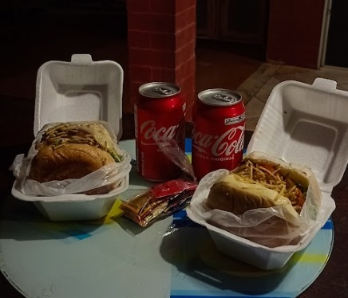

Tem algo que eu queria te dizer...
Gabi…
Engraçado como algumas lembranças insistem em ficar.
Tem noite que eu fecho o olho e me vejo ali… chegando na sua casa com dois hambúrgueres e duas latinhas de coca, como se aquilo fosse o suficiente pra resolver o mundo.
Mas não dá pra resolver todos os problemas em um único dia.
Mas naquela noite a gente riu, conversamos, nos distraímos, demoramos pra decidir qual filme colocar… e no fim, a gente começou um filme qualquer… e ficou nisso… assistindo só uma parte porque estava tarde e eu tive que ir embora.
O resto? A gente deixou pra outro dia. E como muita coisa entre a gente… acabou ficando pela metade, mas ainda assim… foi bom enquanto durou.
Eu sei que ficamos distantes. Sei que foi vacilo meu… falta de esclarecimento e de saber lidar com as coisas do jeito certo.
E talvez, se eu fosse 100% honesto comigo mesmo, eu diria que tem um pedaço de mim que ainda sente falta… da sua risada alta… das suas respostas rápidas… do jeito leve (e provocante) com que você deixava tudo menos chato.
A gente nunca foi só “só amigos”. Teve aquela fase de amizade mais íntima, aquele meio termo confuso que eu fingia que entendia, mas nunca entendi de verdade.
Talvez por isso eu tenha me perdido…
Tentando ser algo, tentando não ser, tentando fingir que não ligo… enquanto ligava.
Hoje eu penso que talvez o que faltou entre a gente foi o que você sempre me falava: verdade e maturidade.
Nem é sobre voltar a ser o que era… nem sobre apagar o que foi.
É sobre saber respeitar o espaço… saber ouvir… saber ser amigo de verdade… sem joguinhos, sem orgulho idiota, sem esse medo bobo de sentir.
Se eu tivesse que resumir você?
Sorridente, gostosa e extrovertida… e eu falo isso sem medo… porque, querendo ou não, é impossível pensar em você e não lembrar de alguma história engraçada.
Se nos aproximarmos de volta… que seja com mais leveza, mais verdade e menos confusão.
E se não for… que você continue sendo feliz, com esse jeito todo seu… que, por algum motivo que nem eu entendo direito… ainda faz falta.
— Junior.
